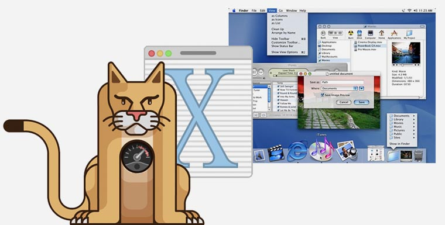
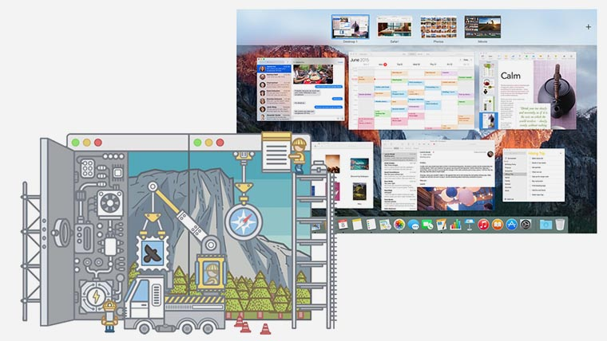
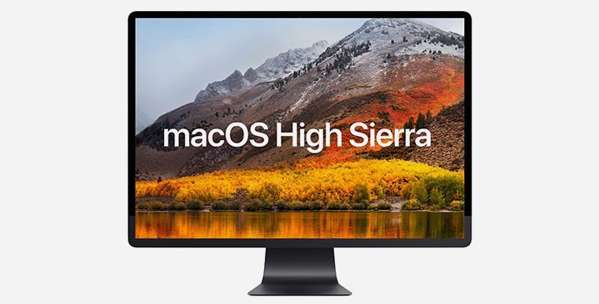

Как менялось MacOS за 33 года
- ◎ System 1.0 (1984)
- ◎ System 2.0 – 6.0 (1985-1988)
- ◎ System 7.0 – 7.6 (1991-1996)
- ◎ System 8 (1997)
- ◎ Mac OS 9 (1999)
- ◎ Mac OS X 10.0 Cheetah (2001)
- ◎ Mac OS X 10.1 Puma (2001)
- ◎ Mac OS X 10.2 Jaguar (2002)
- ◎ Mac OS X 10.3 Panther (2003)
- ◎ Mac OS X 10.4 Tiger (2005-2007)
- ◎ Mac OS X 10.5 Leopard (2007-2009)
- ◎ Mac OS X 10.6 Snow Leopard (2009-2011)
- ◎ Mac OS X 10.7 Lion (2011-2012)
- ◎ Mac OS X 10.8 Mountain Lion (2012-2013)
- ◎ Mac OS X 10.9 Mavericks (2013-2014)
- ◎ Mac OS X 10.10 Yosemite (2014-2015)
- ◎ Mac OS X 10.11 El Capitan (2015-2016)
- ◎ MacOS 10.12 Sierra (2016-2017)
- ◎ MacOS 10.13 High Sierra (2017)

Mac OS (Macintosh Operating System) — семейство операционных систем, производимое
компанией Apple для линейки персональных компьютеров Macintosh.
Система стала одной из первых, предоставлявших пользователю наглядный графический интерфейс вместо
сложной для понимания командной строки.
Впервые Mac OS представили вместе с первым компьютером семейства Macintosh в 1984 году. Термин «Mac
OS» начал использоваться лишь в середине 90-х.
В период с 1984 по 2001 годы Apple выпускала операционные системы с
System 1 до Mac OS 9. Их принято считать классическими. В 2000-м году состоялся
релиз Mac OS X, которая позже получила свою отдельную нумерацию.
Наверх ⇧
System 1.0 (1984)
Самая первая версия системы предоставляла пользователю доступ к дружественному графическому
интерфейсу.
Уже тогда команде Джобса удалось сделать понятное взаимодействие с элементами в оконном режиме. По
сути
современные операционные системы отличаются от System 1.0 лишь графикой и дополнительными
возможностями.
Наверх ⇧
System 2.0–6.0 (1985-1988)
За этот период система обрастала дополнительными возможностями, настройками и стандартными
приложениями. Разработчики добавили полноценную иерархическую файловую систему.
Основные усилия прикладывались для адаптации ОС под новые компоненты и устройства. Появлялась
поддержка слотов расширения, периферийных устройств, новых процессоров и более емких накопителей.
Лишь в System 5 была реализована полноценная модель многозадачности, позволявшая выделять системные
ресурсы запущенным в фоновом режиме приложениям.
Наверх ⇧
System 7.0–7.6 (1991-1996)
Операционная система получила первый глобальный апгрейд впервые за семь лет существования.
Пользователи увидели цветной интерфейс. В большинстве системных приложений и настройках преобладали
оттенки серого, но некоторые элементы стали цветными.
Многозадачность приобрела завершенный вид и практически не отличалась от того, чем мы пользуемся на
современных Mac.
В последующих обновлениях разработчики устраняли недоработки, добавляли поддержку новых компонентов
и встраивали в систему новые приложения. Это были как собственные наработки Apple, так и
приобретенное у сторонних разработчиков ПО.
Наверх ⇧
System 8 (1997)
Релиз системы состоялся летом 1997 года после возвращения Джобса в Apple. Система изначально должна
была продолжить старую нумерацию и выйти с индексом 7.7.
В трудные для компании времена Джобс решил поступить иначе. Apple официально перестала выпускать
System 7, которая в то время была доступна для установки на компьютеры сторонних производителей.
Так в компании решили покончить с компьютерами-клонами Apple. С того времени официально операционная
система компании устанавливается лишь на компьютеры собственного производства.
В Apple отчитались о 1.2 миллионах проданных копий System 8 за первые две недели после релиза и еще
о 3 миллионах проданных лицензий за следующие 6 месяцев.
Сама же System 8 имела не так много изменений. Элементы интерфейса получили больше цветов и
оттенков, появились темы оформления и новая панель управления.
Наверх ⇧
Mac OS 9 (1999)
Mac OS 9 стала последним крупным обновлением классических версий Mac OS. Релиз состоялся 23 октября
1999 года.
Разработчики логически развивали идеи, заложенные в предыдущих версиях, а ранние сборки Mac OS 9 и
вовсе носили название System 8.7.
Mac OS 9 позволяла нескольким пользователям компьютера иметь свои собственные данные и системные
настройки. Появилось шифрование данных по технологии Keychain, работа с удаленными сетевыми
серверами и улучшенная поддержка USB протокола.
Последним обновлением классической Mac OS стала версия 9.2.2, выпущенная 5 декабря 2001 года.
Наверх ⇧
Mac OS X 10.0 Cheetah (2001)
Первая система современной линейки Mac OS вышла в марте 2001 года. До 2012 семейство именовали «Mac
OS X», затем до 2016 года апдейты получали упрощенное название «OS X», а в последние годы в компании
вернулись к классическому «macOS».
Mac OS X по сути являлась преемником Mac OS 9, но, в отличие от классических систем, основывалась на
Unix. В системе нашлось место многим разработкам компании NeXT конца 80-х начала 90-х годов.
Компания была основана Джобсом, а одним из его условий возвращения в Apple стало поглощение более
мелкой NeXT яблочным гигантом.
В OS X 10.0 Cheetah был представлен переработанный графический интерфейс Aqua, появились новые
приложения TextEdit, Preview, Mail и QuickTime.
Для работы системе требовались немалые по тем временам 128 Мб оперативной памяти и 800 Мб на
накопителе.
Многие пользователи критиковали систему за отсутствие поддержки драйверов для периферийных устройств
из Mac OS 9. OS X 10.0 была более требовательной и на старом железе работала менее производительно,
чем предыдущие версии системы.
Наверх ⇧
Mac OS X 10.1 Puma (2001)

Всего через полгода после Cheetah Apple выпускает крупное обновление Mac OS X 10.1 Puma.
Основной упор был сделан на повышение производительности и оптимизацию работы железа. С осени 2001
года все новые компьютеры Apple продавались с предустановленной Mac OS X 10.1, до этого многие
модели комплектовались старой Mac OS 9.
Наверх ⇧
Mac OS X 10.2 Jaguar (2002)
Разработчики сделали упор на расширение коммуникационных возможностей. В системе появляется
iChat и Адресная книга.
Пользователи с ограниченными возможностями впервые получили блок специальных опций Универсальный
доступ.
Наверх ⇧
Mac OS X 10.3 Panther (2003)
В Apple довели до ума собственный браузер Safari , который стал просмотрщиком веб-страниц по
умолчанию в новой версии Mac OS X.
Упор был сделан на удобную работу с несколькими приложениями и рабочими пространствами. В системе
появился режим Expose.
Наверх ⇧
Mac OS X 10.4 Tiger (2005-2007)
Выход новой версии операционной системы совпал с переходом производства компьютеров на платформу
Intel
. В Apple решили увеличить цикл крупных обновлений с одного года до двух.
С апреля 2005 до ноября 2007 вышло более 10 версий Mac OS X 10.4 с незначительными новшествами,
улучшением совместимости и производительности.
Пользователи впервые увидели универсальный поиск Spotlight и панель Dashboard с
виджетами.
Наверх ⇧
Mac OS X 10.5 Leopard (2007-2009)

Следующие два года компания обновляла и поддерживала систему Mac OS X 10.5 Leopard. Даже
параллельная разработка iPhone OS (iOS) для первого iPhone не помешала добавить ряд ключевых
особенностей.
Появлялся удобный инструмент резервного копирования Time Machine, сервис Boot Camp
позволил
запускать на мак другие операционные системы, а сама Mac OS обзавелась поддержкой 64-битных
программ.
Наверх ⇧
Mac OS X 10.6 Snow Leopard (2009-2011)
Кодовое название, незначительно отличавшееся от предыдущего, намекало, что разработчики не вносили в
систему серьезных изменений, а лишь занимались доведением до ума имеющихся фишек и возможностей.
В Mac OS X 10.6 мы впервые увидели магазин приложений Mac App Store .
Тем временем в Apple окончательно отказались от архитектуры PowerPC и перешли на процессоры
Intel .
ОС Snow Leopard не поддерживала PowerPC .
Наверх ⇧
Mac OS X 10.7 Lion (2011-2012)
В компании немного навели порядок с iOS и вернулись к ежегодному циклу обновлений Mac OS. Настольная
система унаследовала несколько новых фишек из мобильной.
В Mac OS X 10.7 появились удобные жесты для работы с большинством стандартных приложений и системой.
Дебютировал облачный сервис iCloud .
Начиная с версии Lion Mac OS перестали распространять на CD или DVD, загрузка ПО выполнялась
только
по сети.
Наверх ⇧
Mac OS X 10.8 Mountain Lion (2012-2013)
Для удобства пользователей в Mac OS добавили приложения Сообщения, Напоминания, Заметки и
Центр
уведомлений . Программы были внешне похожи на аналогичные из iOS и дублировали их
возможности на
компьютере.
Добавилось несколько социально ориентированных возможностей. Из iPhone перекочевала функция
Поделиться
(Share), добавили интеграцию с Twitter и Facebook .
Наверх ⇧
Mac OS X 10.9 Mavericks (2013-2014)
В Apple отошли от привычной системы названий ОС, которые в линейке Mac OS X до этого выбирали по
названию видов из семейства кошачьих. Теперь операционная система именовалась в честь известных мест
в Калифорнии.
Пользователи получили аналоги мобильных приложений Карты и iBooks , улучшенную
поддержку нескольких
дисплеев и возможность использовать Apple TV в качестве полноценного экрана для Mac.
Обновление впервые стало бесплатным. В компании пообещали и дальше распростронять ОС на бесплатной
основе.
Наверх ⇧
Mac OS X 10.10 Yosemite (2014-2015)
Эта версия запомнится прежде всего серьезным редизайном. Отказ от скевоморфизма вслед за iOS
способствовал сближению и более тесной интеграции настольной и мобильной ОС, которые уже и так имели
общие приложения и сервисы.
Чтобы усилить сближение добавили набор возможностей под названием Handoff , но при этом
ограничили
поддержку таких возможностей для старых компьютеров.
Наверх ⇧
Mac OS X 10.11 El Capitan (2015-2016)

В Apple не скрывали, что данная версия системы имела множество незначительных изменений и при этом
основные усилия разработчиков направили на повышение стабильности и производительности.
Улучшили большинство стандартных программ Safari, Spotlight, Mail и Заметки , добавили
удобный режим Split View
, но при этом обрезали функционал менее используемых программ, например, Дисковой утилиты .
Наверх ⇧
macOS 10.12 Sierra (2016-2017)
В компании отказались от устоявшегося наименования Mac OS X и вернулись к более классическому
названию системы macOS .
В настольную систему добавили долгожданный голосовой ассистент Siri из iOS, браузер Safari
получил
поддержку платежного сервиса Apple Pay .
Более тесная интеграция с мобильными девайсами позволила разблокировать Mac при помощи часов Apple
Watch.
Наверх ⇧
macOS 10.13 High Sierra (2017)

Уже на следующей неделе пользователи компьютеров Mac получат в свое распоряжение финальный релиз
macOS 10.13 High Sierra. Система незначительно отличается от предшественницы.
Основные изменения находятся под капотом. Система использует новую файловую систему APFS и
имеет
набор графических библиотек Metal 2 для разработчиков ПО.
Вот так Apple медленно, но верно создает лучшую на сегодняшний день настольную операционную
систему.
Наверх ⇧
Автор: Артём Суровцев - 7 сентября 2017